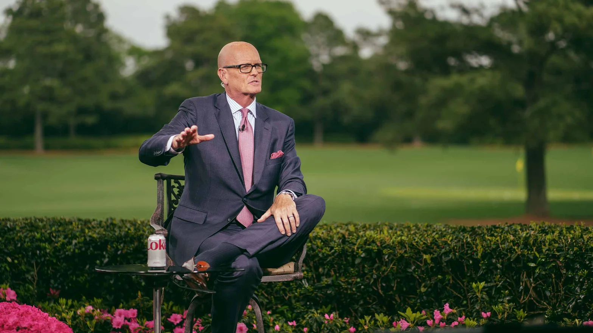

By: James Colgan
Scott Van Pelt gearing up for his show at the Masters
SCOTT VAN PELT ISN’T YOUR FRIEND.
But he sure feels like he could be. This is perhaps why, unlike the dozens of other famous people who can survive for days around Augusta National in reverential anonymity, he spends most of Masters week swarmed.
Consider the scene around Van Pelt near the practice range on Tuesday morning. The mob isn’t quite Beatlemania, but it runs five deep … and it’s multiplying every few seconds as the noise grows louder.
“Scott!!”
SVP!”
“We LOVE you, man!"
Perhaps Van Pelt would be less noticeable were he easier to miss. At a wiry six-foot-six, he protrudes from the top of the frenzy with ease, the crown of his bald head visible above even the tallest well-wisher. He moves through the people like a toddler wading through the ocean — arms flailing, head bobbing, fists out to touch knuckles with the crowd. His slow, intentional strides begin to pick up as he senses the crescendo building. Still, his efforts at an easy exit are mostly useless.
“I just don’t blend in,” he says. “I think it’s the suit.”
His uniform is only part of the problem. The other is that, for all his many talents, Van Pelt is dreadful at saying no.
“Yesterday I ended up taking pictures to the point that I said, ‘I’m not Santa,'” he says with a laugh.
He’s right. At Augusta National, he might be more popular.
SOMEWHERE IN HIS DNA, Scott Van Pelt’s two dominant traits are still at war.
One is the class clown; the kid with grades so bad he was rejected from the University of Maryland’s journalism school. (His beloved alma mater has since rectified that oversight by welcoming him back as a commencement speaker.) The other is the underdog; the dude who needed an unusually lucky break to make it in sports media, then spent his first years in the industry grinding for a network that few people knew or cared about. Today, those divergent genes fill both halves of Van Pelt’s on-air presence — at once strikingly casual and neurotically well-researched — but it’s easy to forget they nearly kept him out of sports media altogether.
It took Van Pelt close to a decade after graduation to land his first true TV job, a product of both his college transcript and deep roots back home in Maryland, where he’d lost his father when he was still in college. In those early years, his life oscillated between work as a DC TV station intern and mortgage banking. But television kept calling to him, so he kept looking for a break. A few months later, one finally came. An old friend called him with an opportunity at a brand-new, 24-hour sports network called “Golf Channel.” The network was niche, but it already had a name and the backing of a group of investors including Arnold Palmer. Van Pelt was sold.
In hindsight, the move to Orlando was more melancholy than he first realized. Sure, he’d landed his dream job at a nationally televised sports network, but he was pretty sure he hadn’t earned it.
“It’s the imposter syndrome, right?” he says now. “I couldn’t get into journalism school. I had horrendous grades. I wasn’t trained in anything. I was just a guy who was winging it — and I still am, to a degree.”
But if he was unprepared for the opportunity, nobody knew it. Van Pelt quickly ascended up the ranks, anchoring the network’s flagship show “Golf Central.” Before long, he was one of Golf Channel’s most prominent early voices.
But if he was unprepared for the opportunity, nobody knew it. Van Pelt quickly ascended up the ranks, anchoring the network’s flagship show “Golf Central.” Before long, he was one of Golf Channel’s most prominent early voices.
“It was never doubt that I couldn’t do it,” Van Pelt says. “It was disbelief that any of this is.”
Scott trying to maneuver his way through a crowd of people while meeting a few fans
At Golf Channel, he grew to embrace the underdog role — and the disadvantages that came with it. On one occasion, he drove five hours from Orlando to Doral solely to ask Tiger Woods for an interview the following week. When the next week rolled around, Tiger requested the PGA Tour make Van Pelt his first interview.
“We were supposed to have 15 minutes,” he says now. “We spoke for 45.”
Determination proved a key constellation in those early days, even as his image was on the rise. Exhaustion was acceptable, he realized. Failure was not.
“I vividly remember showing up to the Open Championship in 2000. It’s me and a shooter, and ESPN has this army,” he said. “I’m like, this is like fighting a tank with a popsicle stick. But f— it, let’s fight, because we’ll get what we need.”
Today, he keeps a post-it note on his desk from the end of his time at Golf Channel, remnants of a $100 bet he lost with a producer. It reads: I’ll never work at ESPN.
At the time, Van Pelt thought he was being cheeky. Now he knows it was something much deeper than that.
“The real reason I said that … I think it was protecting myself,” he says now. “In my mind, I was thinking, ‘Why would they hire me? I wouldn’t.'”
Much of Van Pelt’s success can be traced back to the authenticity of his message. Most people wouldn’t be able to summon the ability to care this much, but nobody can fathom him doing it any other way.
“Maybe 10 years ago, ESPN surprised me with a Fathers Day tribute video at the U.S. Open,” North says. “By the time we got halfway through the thing, we’re both crying on set. Scott and I, like two little kids.”
“That’s Scott. The people he cares about, he cares so deeply. He’d do anything for them.”